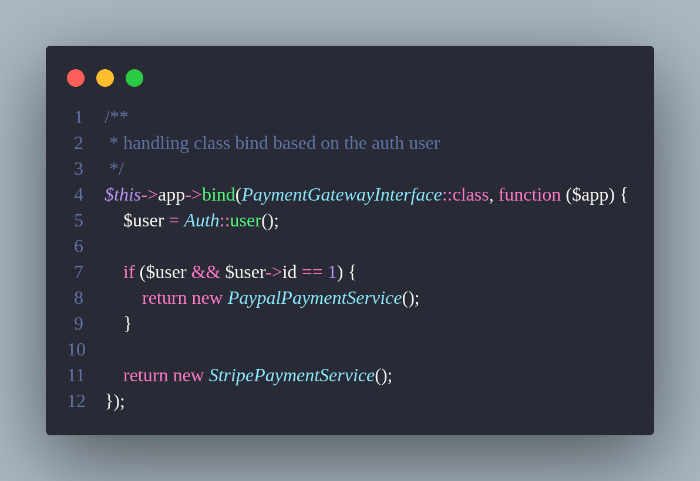
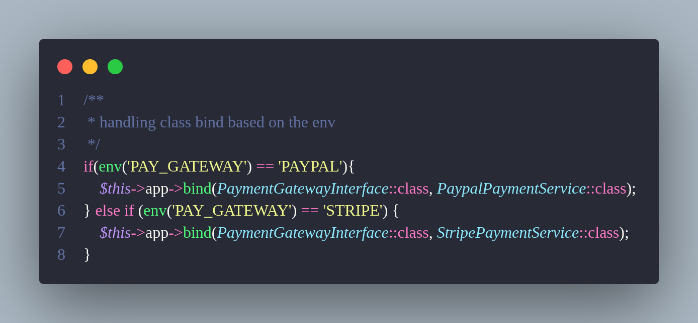
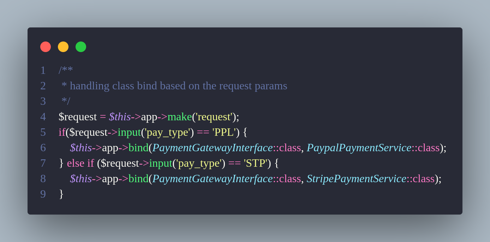
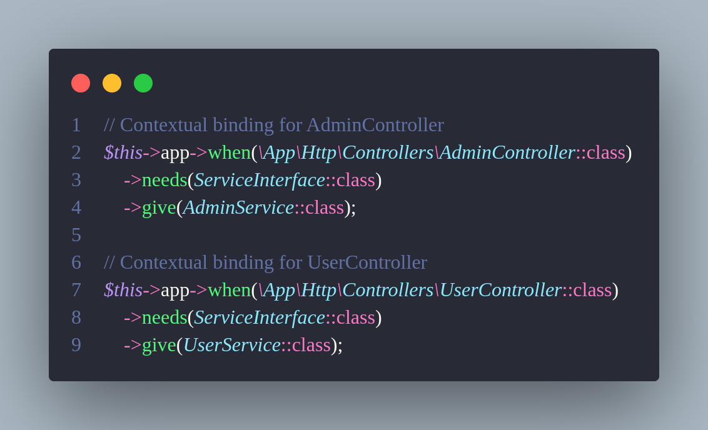
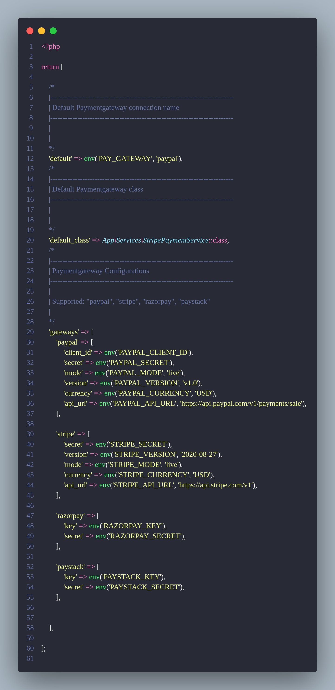

Create Service Provider in laravel
Bind class dynamically by the user authentication
In Laravel, you can bind classes dynamically based on the currently authenticated user. This allows you to provide specific class instances depending on the user's role or other attributes, ensuring that your application remains flexible and context-aware.
providers/AppserviceProvider.php or providers/PaymentServiceProvider(custom service provider)

Bind class dynamically by the .env configutaion
In Laravel, you can bind classes dynamically based on the currently authenticated user. This allows you to provide specific class instances depending on the user's role or other attributes, ensuring that your application remains flexible and context-aware.
providers/AppserviceProvider.php or providers/PaymentServiceProvider(custom service provider)

Bind class dynamically by the user request
Environment-based class binding is another powerful feature in Laravel. By utilizing the `.env` configuration file, you can bind classes dynamically depending on the environment your application is running in, whether it's local, production, or staging.
providers/AppserviceProvider.php or providers/PaymentServiceProvider(custom service provider)

Bind class dynamically by contextual binding
Contextual binding in Laravel enables you to define different bindings for the same class depending on where it's being used. This is helpful when the same class is used in multiple locations but requires different implementations in each context.
providers/AppserviceProvider.php or providers/PaymentServiceProvider(custom service provider)

Configutaion file for class binding
Laravel’s configuration files allow you to store class binding settings in a centralized location. This makes it easier to manage bindings, especially in large-scale applications where different services might require different bindings depending on their configuration.
config/payment.php
